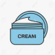

تصمیم به اینکه چه موقع پماد یا لوسیون تجویز کنید بستگی به نوع زخم دارد اگر زخم خشک است پماد یا کرم و اگر زخم مرطوب است لوسیون وکمپرس مرطوب تجویزکنید
ضایعات مرطوب مانند وزیکول و تاول و دلمه
ضایعات خشک مانند خشکی پوست، ترک
ترتیب قدرت جذب برروی پوست :
پماد > ژل > کرم > لوسیون
تفاوت کرم و پماد: پماد یک ترکیب نیمه جامد و گریسی است یعنی چرب است و با شستن با آب پاک نمیشه ولی کرم یک امولسیون آبی روغنی است و چون در آن آب بکار رفته، قابل شستشو است
تصویری برای این نسخه موجود نیست.